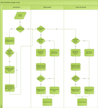
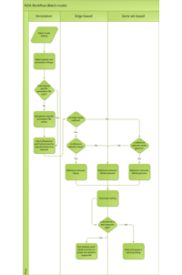
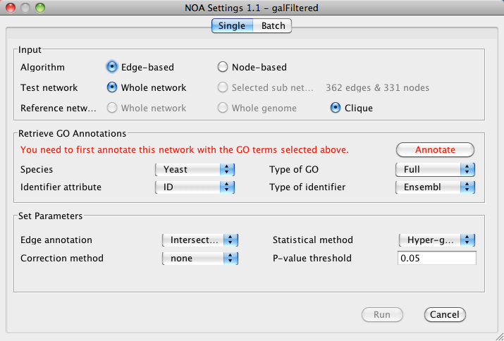
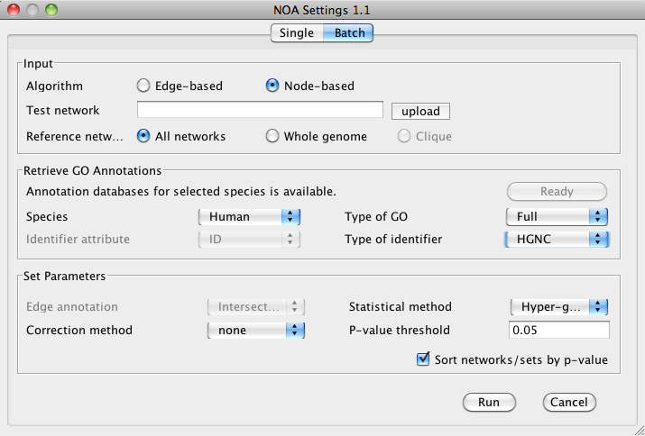
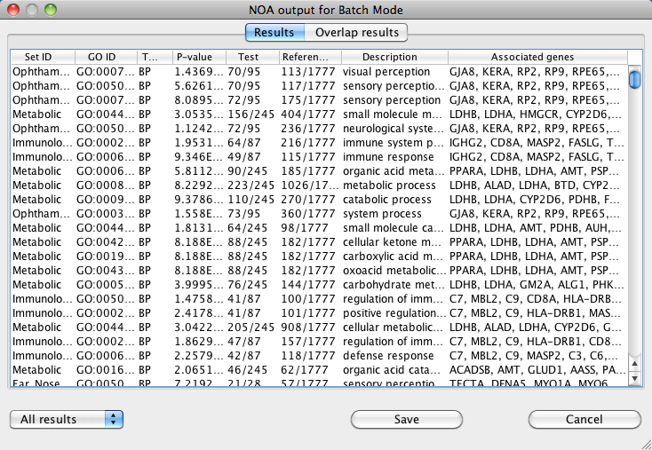
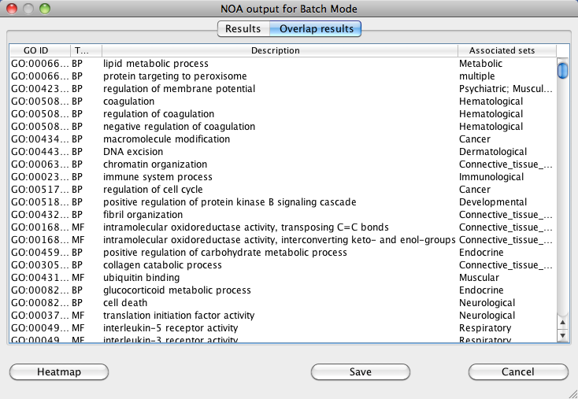

Introduction
NOA performs Gene Ontology enrichment analysis on networks.
NOA performs both gene set and interaction-based enrichment analysis, on one or more networks. The algorithm works by first annotating the network
(nodes and interactions) with GO terms, followed enrichment analysis.
The NOA algorithm was first implemented by Jiguang Wang, et al. Please contact us with any feedback, questions or comments.
The NOA algorithm was first implemented by Jiguang Wang, et al. Please contact us with any feedback, questions or comments.
NOA is supported by the National Resource for Network Biology (P41 GM103504).
Download
To install, place the following jar files
in the plugins directory of your Cytoscape installation:
Note that NOA requires the CyThesaurus
plugin, version 1.3.1 or higher:
Technical documentation
The NOA algorithm workflow is explained in the below graphics. Click to enlarge.
Single network mode
{kind=link}
Batch mode
{kind=link}
Running NOA - Single Mode
- Select a network to load under File>Import Network (Multiple File Types). The network can be in any of the Cytoscape supported network file formats. Download sample file: galFiltered.sif (8KB)
- Start NOA by selecting Plugins>NOA. 
Input
- Select either Edge-based or Node-based algorithm.
- Select to run analysis on either the Whole network or a Selected sub network. NOA will display the number of nodes or edges in the selected sub network.
- Select a Reference network for over-representation. This can be either the Whole network or a Clique.
Retrieve GO Annotations
- Under Species, select the appropriate species for your data.
- If this is the first time running NOA, you will see a message to download necessary databases. Click Download to continue. NOA will download the necessary database for your data. It is only necessary to download datbases once per species.
- Once database download is complete, NOA will prompt you to annotate your network with GO annotations. Verify that the correct Identifier attribute and Type of identifier are selected.
- In addition, you will also be able to select which GO annotation to use:
- SlimMosaic: Custom GO Slim for Mosaic.
- SlimPIR: GO annotations from the Protein Information Resource.
- SlimGeneric: Generic GO Slim annotations from Gene Ontology.
- Full: Full GO annotations from Gene Ontology.
- Click Annotate to continue. You can save the annotated network as a session file for future use. You can also re-annotate the network with the latest annotations from GO at any time by clicking Re-annotate.
Set Parameters
- In the Set Parameters section you can choose several parameters that will directly affect the results of NOA:
- Edge annotation:
- Correction method: Method to use for multiple testing correction.
- Statistical method: Method to sue for over-representation.
- P-value threshold: P-value threshold for results.
- Click Run to start NOA.
Navigating the results
NOA results will be displayed as a results table of GO terms relevant to the network, listed by descending P-value.
The results table is shown below next to the original network.
 The table includes the following information:
The table includes the following information:

The table includes the following information:
- GO ID: The identifier assigned by the Gene Ontology
- Type: Gene Ontology type, either Biological Process (BP), Cellular Component (CC) or Molecular Function (MF).
- P-value: The resulting P-value as calcualted based on the statistical method selected.
- Test: Number of nodes/edges in the network associated with the GO term and the total number of nodes/edges in the network. For example, if 8 out of 362 network nodes are found in the GO term, the Sample column displays 8/362.
- Reference: Number of nodes/edges in the network associated with the entire GO hierarchy and the total number of nodes/edges in the hierarchy. For example, if 15 out of 54615 network nodes are found in the hierarchy, the Population column displays 15/54615.
- Description: Description of GO term from the ontology.
- Associated nodes/edges: List of nodes/edges associated with the GO term. Selecting any GO term in the results table will select the associated nodes/edges in the network.
Running NOA - Batch Mode
- Start NOA by selecting Plugins>NOA. 
Input
Selecting Input parameters for batch mode is similar to single mode, except that a batch input file must be specified under
Test network. The batch network file must conform to the following formatting:
- The beginning of each network is specified by a closing angle bracket (>) followed by the network name, for example ">Net1".
- Each network is specified in sif format.
Retrieve GO Annotations
Retrieving GO annotations for a batch analysis is identical to single analysis mode, except that the Identifier attribute
does not need to be specified, since NOA uses identifiers directly from the batch network file.
Set Parameters
Setting analysis parameters is also identical to single mode.
Navigating the results
NOA results will be displayed as a results table of GO terms relevant to the input networks. For batch mode, results are provided
in two different ways, Results, formatted like the results from single mode, and Overlap results , listed by subnetwork in order of descending P-value.

The table includes the same information as for single mode, with one additional column for Network ID, the individual
network name from the input file.
For overlap results, a list of GO terms found to be associated with more than one network is displayed.

NOA also includes a heatmap view of the results. The heatmap results can be saved as individual image files and comma-separated spreadsheets for each of the
three branches of GO.